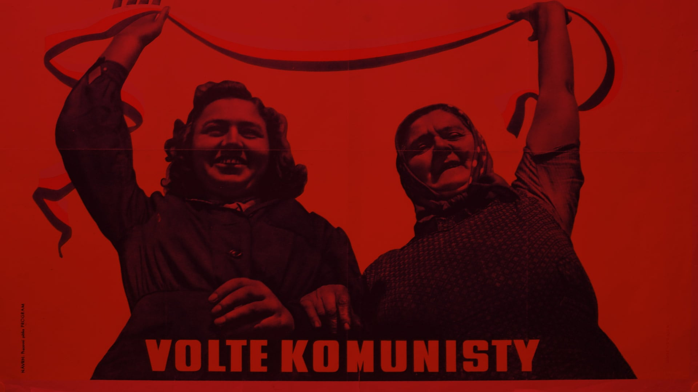
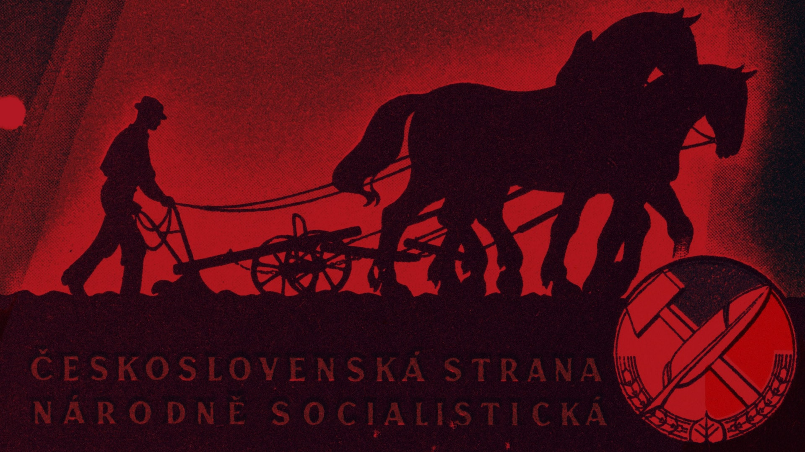
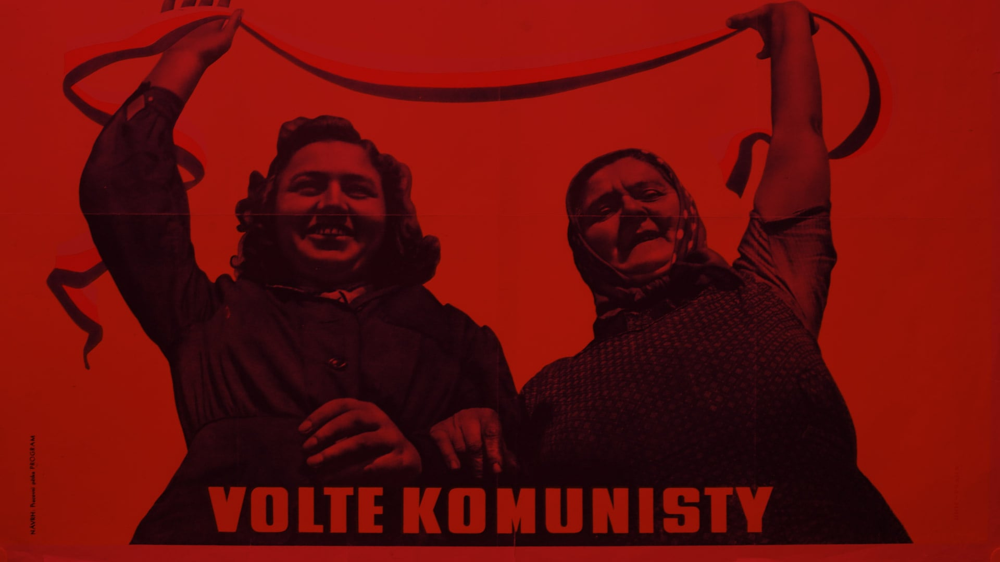
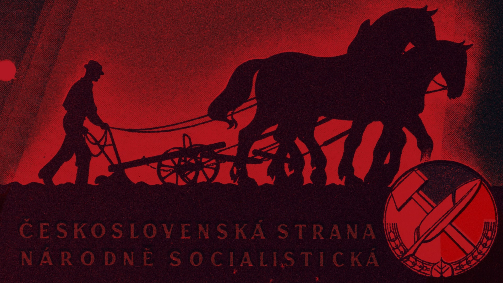

Ano
Ne
Choice 3
Choice 4
V Československu se voleb zúčastnilo 7 099 411 voličů.
Komunistická strana Československa sice utržila porážku na slovenském území,
v celorepublikovém měřítku ale slavila vítězství. Celkem získala 43,3 % hlasů.
Velkou roli hrálo přerozdělování půdy, pozitivní vnímání Sovětského svazu, a tedy
i očekávání nového, sociálně spravedlivějšího systému.
Na druhém místě skončili s 25,2 % hlasů Národní socialisté, kteří tvořili protipól komunistů, svým programem však pravděpodobně nedokázali oslovit venkov.
Ve vyšší počet voličů z venkova doufali lidovci, ale ti se museli spokojit s pouhými 16,3 % hlasů. To byl počátek vnitřních problémů ve straně.
Sociální demokracie získala pouhých 15 % hlasů navzdory tomu, že měla velmi podobný program jako komunisté.
Volby v roce 1946 byly posledními svobodnými demokratickými volbami na příštích čtyřicet let.